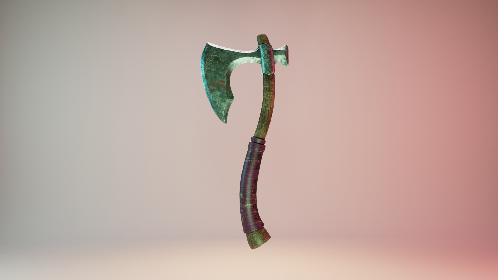
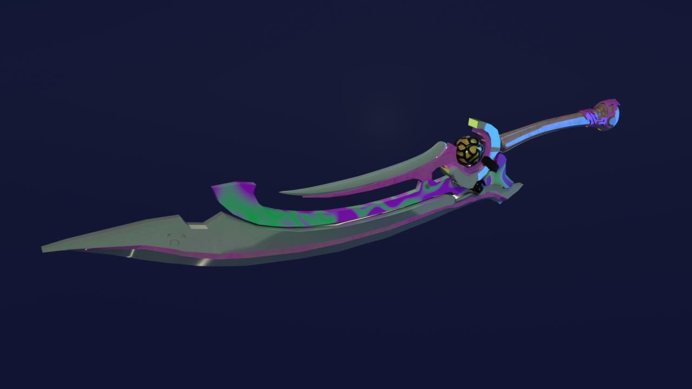
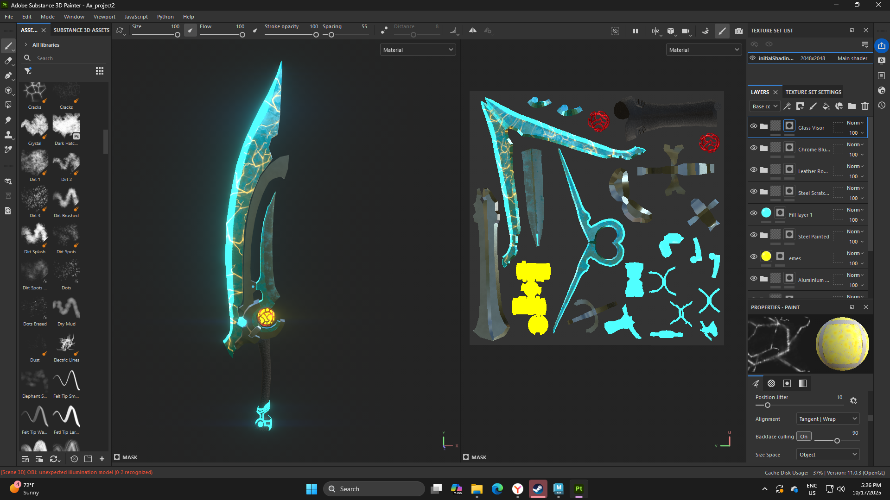
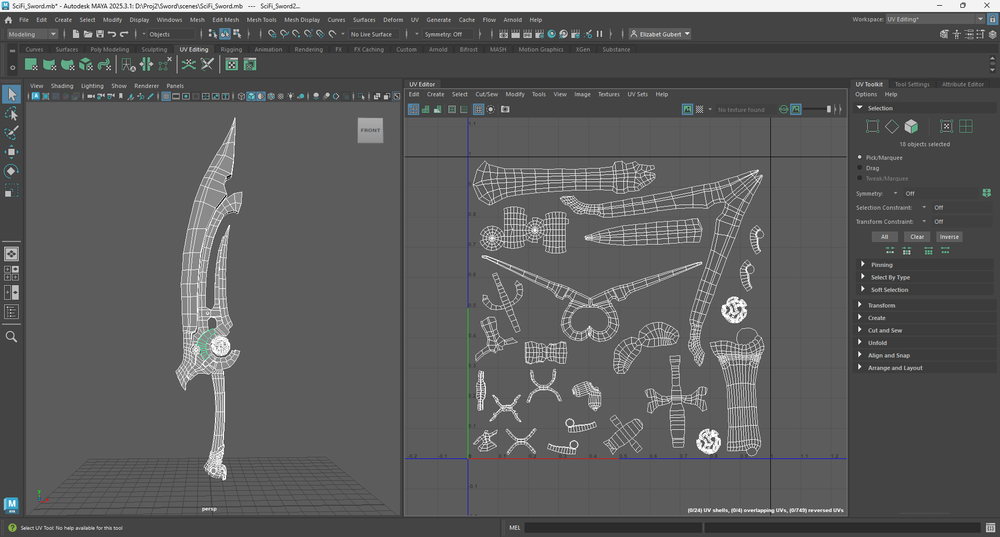

Details
UV Mapping | Texturing | Lighting | Rendering
Autodesk Maya | Adobe Substance Painter
About the Work
These images show an axe and a fantasy weapon. I used existing models to practice UV mapping and texturing in Substance Painter. I also worked with lighting and rendering in Maya to explore how the surfaces look under different lighting conditions.
UV mapping was the main challenge. Some models had complicated geometry or UV layouts that needed adjustments before I could apply the textures properly. Working through these problems helped me better understand how a flat texture wraps around a three-dimensional object.